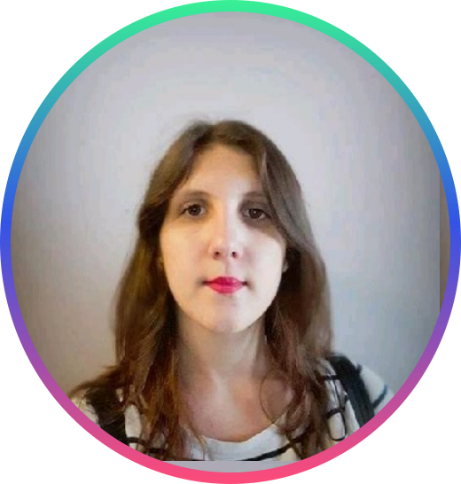
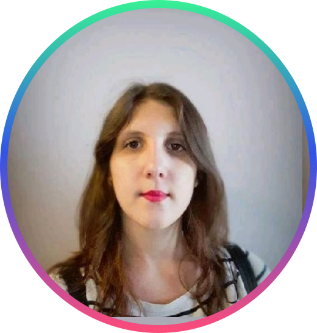

Education
June - November 2020
Web formation development at Sirius School
2019 - Uliège
Master Degree in ancient languages and literature
(Oriental orientation,Extrême-Orient : China-Japan)
September - October 2017 - Language stay
China youth university of political studies (中国青年正式学院) à Pékin
July 2016 - Language stay
Foreign languages university of Beijing (北京外国語大学) à Pékin
2016 - Uliège
Bachelor Degree in Sociology & Anthropology
Work experiences
August - November 2019 - Coastair Chartering
Cargo Officer
May - June 2019 - ECDC-Logistics
Administrative student
2015-2017 - S.P.I.R.A.L
Student in Interview's transcriptions